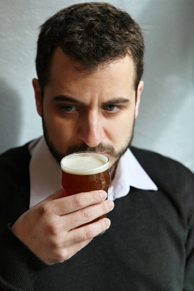
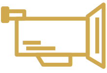

Thibault Schuermans
Consultant en bières & gastronomie
Franco-belge épicurien, j'ai toujours été animé et passionné de gastronomie, de voyages et de beaux breuvages. Après 10 ans passés dans les assurances, j'ai franchi le cap et j'ai suivi une formation à L'Institut Paul Bocuse.
Bière à Table est née à l'occasion de cette formation. Je cherche avant tout à démocratiser la bière de façon gourmande et, comme son nom l'indique, à ramener la bière à table comme on peut le voir en Belgique, Allemagne ou au Québec.
Je parfais mon palais et ma culture tous les jours car de nouvelles tendances apparaissent sans cesse !
Vous voulez me voir en vrai afin que je vous donne l'eau, le malt et le houblon à la bouche !

Dans les médias

Les évènements

Prenons contact !